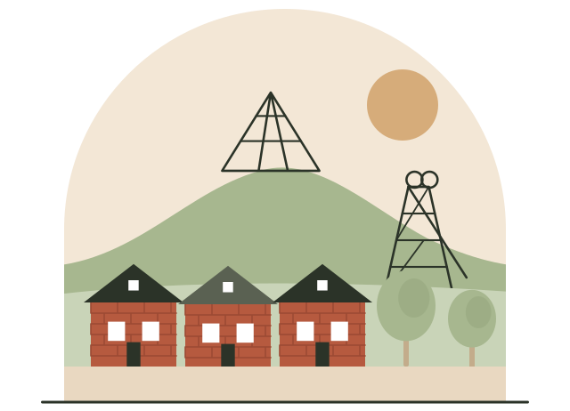

Über Alltagsfels
Ein kleines Team aus Bottrop. Feste Ansprechpartner, mit Zeit und Ruhe.

Warum es uns gibt
Dominik Vogel arbeitet seit vielen Jahren als Pflegefachkraft. Er erlebt immer wieder, dass ältere Menschen zu Hause mehr brauchen als Pflege: jemanden, der Zeit mitbringt, zuhört, mit ihnen spazieren geht oder sie zum Arzt begleitet. Im Pflegealltag ist dafür meist keine Zeit.
Das möchten wir ändern. Seniorinnen und Senioren sollen möglichst lange selbstständig in ihrer Wohnung leben können. Und ihre Angehörigen sollen dabei Entlastung bekommen.
Wer hinter Alltagsfels steht
Verschwiegen: Was Sie uns anvertrauen, bleibt unter uns.
-
Julian Wehner
Geschäftsführer, geschult in Alltagsbetreuung
Er ist Ihr Ansprechpartner für alle Fragen rund um die Betreuung.
-
Dominik Vogel
Examinierte Pflegefachkraft
Er bringt viele Jahre Erfahrung aus der Pflege mit und ist unser fachlicher Ansprechpartner.

Warum Alltagsfels?
Ein Fels steht für Halt. Oben reicht einer dem anderen die Hand, und die Sonne steht für Wärme. So möchten wir für Sie da sein: als fester Punkt in Ihrem Alltag, auf den Sie sich verlassen können.
Was uns wichtig ist
Einfühlsam
Wir begegnen jedem Menschen mit Respekt, Geduld und echtem Interesse.
Woran Sie das merken: Wir hören zu und machen die Dinge in Ihrem Tempo.
Verlässlich
Auf uns ist Verlass: bei Terminen, Absprachen und im Alltag.
Woran Sie das merken: Wir kommen zu festen Zeiten, die wir mit Ihnen absprechen.
Persönlich
Wir nehmen uns Zeit für jede Person.
Woran Sie das merken: Sie haben feste Ansprechpartner aus der Region.
So sichern wir Qualität
Eine Pflegefachkraft im Team
Fachliche Begleitung durch eine examinierte Pflegefachkraft.
Ein schriftlicher Vertrag
Bevor die Betreuung beginnt, bekommen Sie alles schriftlich.
Absprachen im Team
Regelmäßige Team- und Fallbesprechungen.
Schweigepflicht
Für alle, die bei uns arbeiten.
Klare Wege
Bei Fragen und Beschwerden wissen Sie, an wen Sie sich wenden.
Wir suchen Verstärkung: Alltagsbegleiterinnen und Alltagsbegleiter (m/w/d). Quereinstieg ist möglich.
Jobs bei AlltagsfelsUnser Einsatzgebiet: Bottrop und Umgebung, zum Beispiel Gladbeck, Gelsenkirchen und Essen.
Mehr zum EinsatzgebietLernen wir uns kennen
Ob für Sie selbst oder für einen Angehörigen: Melden Sie sich gern, auch wenn Sie noch unsicher sind. Das Erstgespräch bei Ihnen zu Hause ist kostenlos und unverbindlich.